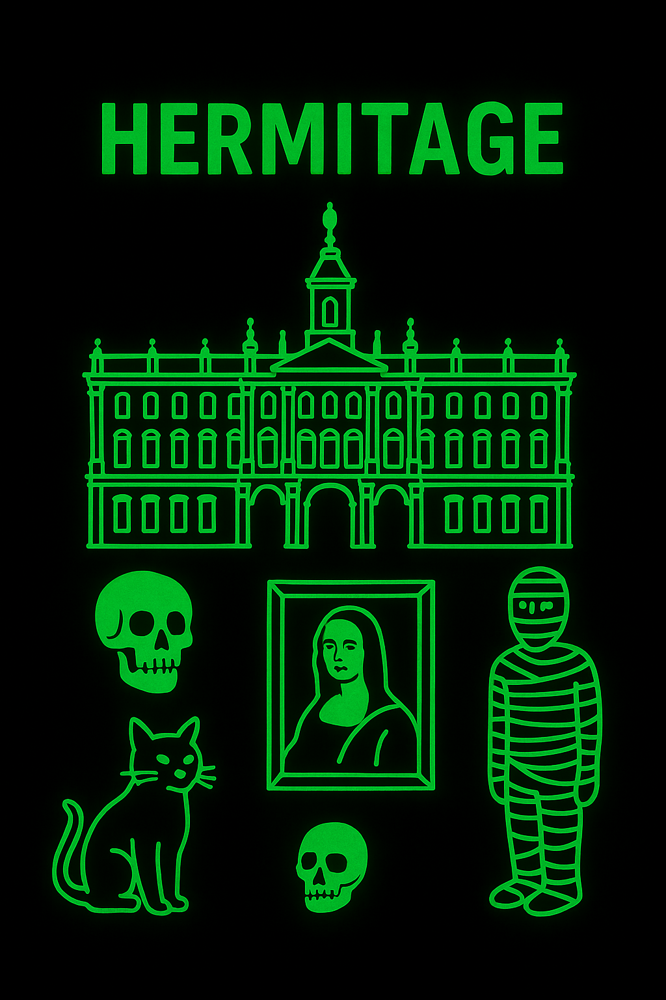
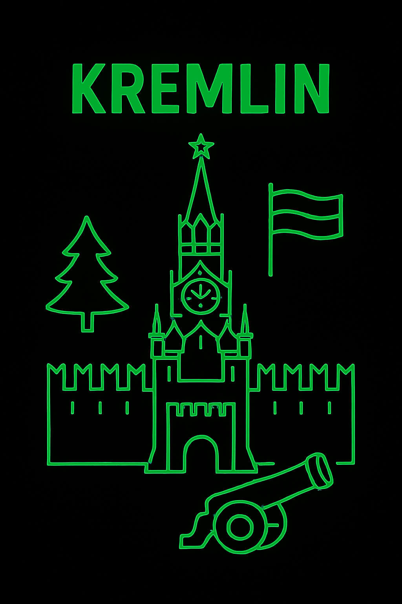
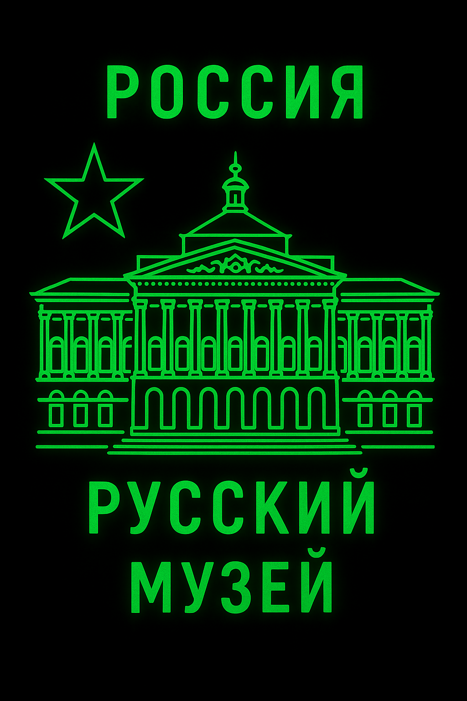

El arte sobrevive, tu no: Ubicado en San Petersburgo, este museo empezó como el capricho de Catalina la Grande y ahora es hogar de más de 3 millones de obras. Ha sobrevivido revoluciones, guerras mundiales y saqueos, demostrando que el arte tiene mejor seguro de vida que la mayoría. Entre Da Vincis, Rembrandts y momias egipcias, también alberga una legión de gatos para mantener a raya a los ratones (y a los críticos de arte). Si la historia nos ha enseñado algo, es que el Hermitage resistirá lo que sea… aunque tú no corras con la misma suerte.
Искусство выживает, а вы нет Этот музей, расположенный в Санкт-Петербурге, возник по прихоти Екатерины Великой, и сейчас в нем хранится более 3 миллионов произведений искусства. Оно пережило революции, мировые войны и грабежи, доказав, что искусство имеет лучшую страховку жизни, чем большинство других. Помимо да Винчи, Рембрандта и египетских мумий, здесь также обитает легион кошек, которые отпугивают мышей (и искусствоведов). Если история нас чему-то и научила, так это тому, что Эрмитаж выдержит все... даже если вас не постигнет та же участь.
Símbolo del poder ruso desde el siglo XV, el Kremlin ha visto zares, soviéticos y presidentes desfilar por sus pasillos. Hogar de catedrales, palacios y reliquias como la Campana del Zar (rota antes de sonar) y el Cañón del Zar (nunca disparado), es la mezcla perfecta de historia, grandeza y pura ironía.
Символ российской власти с 15-го века, Кремль видел парады царей, Советов и президентов по его залам. Здесь расположены соборы, дворцы и реликвии, такие как Царь-колокол (разбитый перед звоном) и Царь-пушка (никогда не стрелявшая). Это идеальное сочетание истории, величия и чистой иронии.
Fundado en 1895, este museo en San Petersburgo alberga el mayor tesoro de arte ruso, desde íconos medievales hasta Kandinsky. Aquí puedes ver cómo el arte ha sobrevivido invasiones, revoluciones y crisis económicas… algo que muchos artistas no lograron. Incluso el edificio es tan majestuoso que podrías confundirlo con la casa de un oligarca.
Основанный в 1895 году, этот музей в Санкт-Петербурге хранит крупнейшую сокровищницу русского искусства — от средневековых икон до Кандинского. Здесь вы можете увидеть, как искусство пережило вторжения, революции и экономические кризисы... то, чего не удавалось многим художникам. Даже здание настолько величественно, что его можно принять за дом олигарха.
